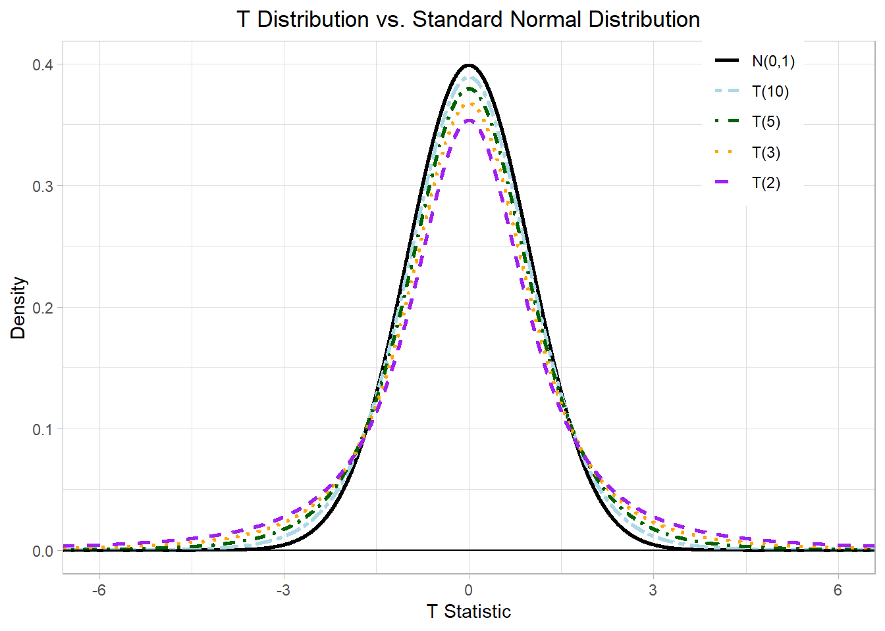
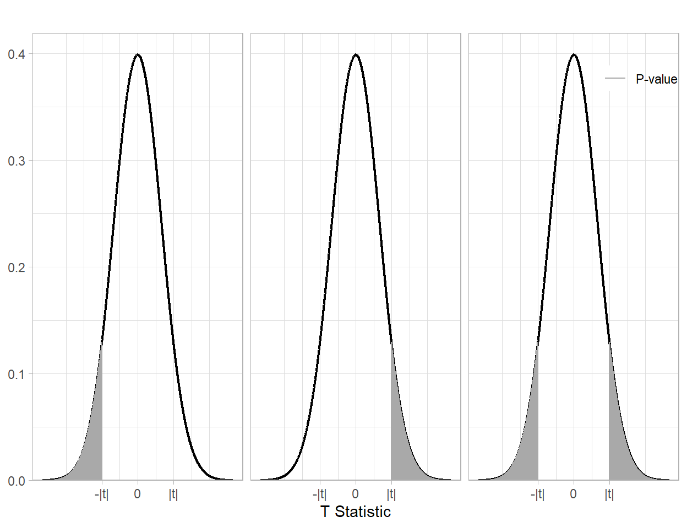
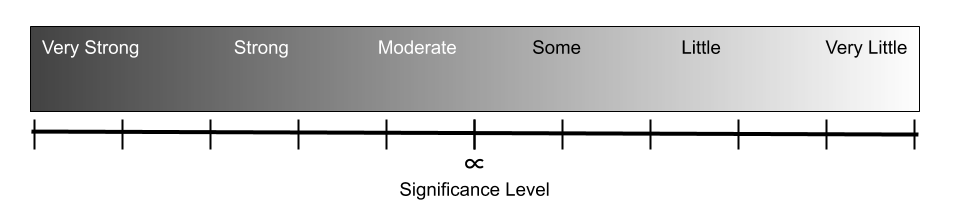
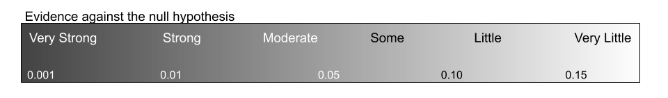
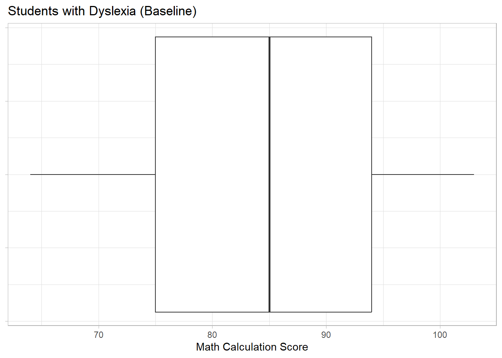
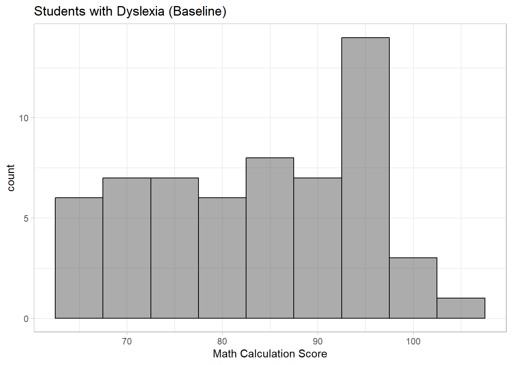

Introduction to Inference: Hypothesis Testing
In a previous chapter, we discussed statistical hypothesis testing for the population proportion \(\theta\) when a categorical variable has two levels (e.g., the proportion of newborn boys). Let us review the general procedure of statistical hypothesis testing:
- Choose a parameter of interest, and state \(H_0\) and \(H_1\) in terms of the parameter. It depends on the research question.
- Fix a significance level \(\alpha\). It is a small fixed probability of committing Type I error (concluding \(H_1\) when \(H_0\) is true).
- Calculate a test statistic and p-value under the assumption of \(H_0\).
- Evaluate the p-value and the level of evidence against \(H_0\) based on \(\alpha\).
- State the conclusion in the context.
In this chapter, we discuss statistical hypothesis testing for the population average \(\mu\). This statistical hypothesis testing for \(\mu\) is known as the one-sample t-test.
1 Three Kinds of Alternative Hypothesis
Let \(\mu\) be the unknown parameter (the population mean) to be tested.
- The null hypothesis is \(H_0\): \(\mu = \mu_0\) where \(\mu_0\) is referred to as the null value.
There are three forms of alternative hypothesis \(H_1\)
\(H_1\): \(\mu > \mu_0\) which is referred to as the right-sided test.
\(H_1\): \(\mu < \mu_0\) which is referred to as the left-sided test.
\(H_1\): \(\mu \ne \mu_0\) which is referred to as the two-sided test.
Given \(H_0\): \(\mu = \mu_0\), the direction of \(H_1\) depends on the researcher’s question of interest.
Here are the generic symbolic and verbal structures of the hypotheses:
\(H_0: μ = 0\) The population mean of the [ response variable + units] of the [population context] is zero.
\(H_1: μ \{\neq, > , <\} 0\) The population mean of the [ response variable + units] of the [population context] is {not equal to/greater than/less than} zero.
2 Test Statistic
Given a simple random sample \((X_1, X_2, \dots, X_n)\) of size \(n \ge 2\) from any population distribution, let \(\bar{X} = \frac{1}{n} \sum_{i=1}^n X_i\) be the sample mean and \(S = \sqrt{ \frac{1}{n - 1} \sum_{i=1}^n (X_i - \bar{X})^2 }\) be the sample standard deviation. Under the null hypothesis \(H_0\): \(\mu = \mu_0\), a test statistic is given by
\[ T = \frac{\bar{X} - \mu_0}{ \frac{S}{\sqrt{n}} } \]
This test statistic is referred to as a T statistic. The numerator of \(T\) measures the discrepancy between the sample mean \(\bar{X}\) and the null value \(\mu_0\), and the denominator \(\texttt{SE} = \frac{S}{\sqrt{n}}\) (which is referred to as the standard error of \(\bar{X}\)) quantifies the uncertainty about the sample mean \(\bar{X}\).
A large magnitude of \(T\) is evidence against the null hypothesis \(H_0\): \(\mu = \mu_0\). Under the assumption of \(H_0\), the reference probability model for the T statistic is the T distribution with \(\nu = n - 1\) degrees of freedom, and we write \(T \sim \mathcal{T}(\nu)\).
It is also called the null distribution of \(T\) (the sampling distribution of \(T\) under the assumption of \(H_0\)). The below figure shows the T distribution with \(\nu =\) 2, 3, 5, and 10 degrees of freedom. As \(\nu\) increases (i.e., the sample size \(n\) increases), the T distribution converges to the standard normal distribution.

2.1 Decision Based on P-value
Remember that the p-value is defined as the probability of observing an observed outcome or a more more extreme under the assumption of \(H_0\). After calculating \(T = \texttt{t}\), the calculation of p-value depends on the direction of \(H_1\) as follows:
- Right-sided test: p =
1 - pt(t, df) - Left-sided test: p =
pt(t, df) - Two-sided test: p =
2 * pt(t, df)if \(\texttt{t} < 0\) or p =2 * (1 - pt(t, df)if \(\texttt{t} > 0\)

2.2 Interpretation of the P-value
The universal definition of p-value is the probability of observing the currently observed test statistic or more extreme/greater/less under the assumption of \(H_0\), depending on the direction of the alternative..
Here is a more generic interpretation:
There is a probability of {p-value} of observing {test statistic (with associated degrees of freedom)} or … {/more extreme/greater/less}… , if {context of null hypothesis} is true.
Which alternative test uses…
more extreme….
greater….
less…
2.3 Evaluation of the P-value
We can evaluate p-values based on its proximity to the the significance level:

To scale this to our \(\alpha = 0.05\), we would use the following scale

Using the above scale we can write the following evaluation:
We have {very strong/strong/moderate/some/little} evidence against the null hypothesis (in favor of the alternative hypothesis) that the {parameter}… {context of indicated hypothesis} (t={xx}, df={xx}, p-value = {xx}, \(\alpha\) = {xxx}).
3 Confidence Interval for Population Mean
In some sense, the conclusion of one-sample t-test is \(H_1\) (statistically discernible evidence for \(H_1\)) or \(H_0\) (no evidence against \(H_0\)). In addition to this conclusion, it is important to provide both point estimate \(\bar{X}\) and confidence interval \((L, U)\), and they are interpretable in the context. At a confidence level of \(1 - \alpha\), a confidence interval (CI) for \(\mu\) is
\[ \left( \bar{X} - t^* \cdot \frac{S}{ \sqrt{n} } , \, \bar{X} + t^* \cdot \frac{S}{ \sqrt{n} } \right) \]
where the critical value \(t^*\) is calculated by qt(1 - $\alpha$ / 2, n - 1).
3.1 Interpretation of a Confidence Interval
Based on our sample, with \((1-\alpha)\%\) confidence, the {parameter} of the {measured variable} {context of population} is a single value within the interval {lower bound} and {upper bound} {insert units}.
3.2 Evaluation of a Confidence Interval
We can use the confidence interval to help evaluate a claim about the parameter:
- State that the confidence interval describes plausible values of the parameter, and identify those plausible values of the parameter based on the confidence interval
- Discuss the entirety of the interval and the relation of the entire interval to the specified value of the estimated population parameter. This could take the form of stating that even the upper bound is less than the specified value, so thus all plausible values are less.
- Conclude if value or range is plausible based on the entirety of the interval and if that supports the claim about the parameter.
Note - the only time you are guaranteed to have the CI and Test “agree” is when you are doing a two-sided test where the confidence level and significance level are complements (95% and 5%).
4 Case Study I: Students with Dyslexia
Dyslexia is a learning disorder which affects reading, spelling, and writing. Dyslexia is not related to intelligence or vision, but many people with dyslexia have difficulties in decoding letters and words. Most people with dyslexia can overcome the learning difficulties after receiving a specialized education program. Woodcock Johnson Tests are a set of standardized tests in diverse areas, and they are used as an assessment tool in the specialized education program. The standardized tests are designed in a way that the scores follow a normal distribution with a mean of 100. In addition to reading, writing, and spelling, researchers have hypothesized that dyslexia can affect math calculation ability because it requires decoding math symbols. The dataset \(\texttt{mathcalculation.csv}\) is a sample of 59 students with dyslexia who received the specialized education program. The column \(\texttt{pre}\) is the math calculation test score at the time of entering the program, and the column \(\texttt{post}\) is the test score after completing one year of the program. There are two objectives of data analysis. The first objective is to test whether the population average of math calculation score is below the mean of 100 (i.e., comparing to students without dyslexia), and the second objective is to test whether the students with dyslexia improve math calculation score, on average, after completion one year of the program. A significance level is fixed at \(\alpha = 0.05\) for both tests.
4.1 Objective 1: Baseline Score
The population of interest is students with dyslexia, and the variable of interest is the baseline math calculation score at the time of entering the program. We want to determine if the math calculation score at baseline for students with dyslexia is less than that of students without dyslexia, who average 100 on the assessment.
mathscore <- read_csv("data/mathcalculation.csv", show_col_types = FALSE)
head(mathscore, 5)# A tibble: 5 × 3
id pre post
<dbl> <dbl> <dbl>
1 1 77 80
2 2 71 79
3 3 87 91
4 4 96 99
5 5 76 91df_stats(~pre, data = mathscore) ### descriptive statistics response min Q1 median Q3 max mean sd n missing
1 pre 64 75 85 94 103 83.76271 11.18395 59 0gf_boxplot(~pre, data = mathscore,
title = "Students with Dyslexia (Baseline)",
xlab = "Math Calculation Score") |>
gf_theme(axis.text.y = element_blank())
gf_histogram(~pre, data = mathscore,
title = "Students with Dyslexia (Baseline)",
xlab = "Math Calculation Score",
binwidth = 5, color = "black")
- Identify the following:
Variable and Type: ____________________________________
Population of Interest: _____________________________________
Sample: _____________________________________
Type of Sampling: _____________________________________
Identify whether this is an experimental or observational study. Provide a justification in context of your classification of the study type.
TWe want to determine if the math calculation score at baseline for students with dyslexia is less than that of students without dyslexia, who average 100 on the assessment.
Write the appropriate symbolic representation of the null and alternative hypotheses.
Write a verbal description of the parameter of interest from the hypothesis above in the context of the scenario.
Sketch the null distribution for this scenario, being sure to accurately reflect the shape of the distribution. Label the center of the distribution with the appropriate symbol or value, as applicable.
Calculate the following values and provide their interpretation in context.
Calculate and interpret the test statistic.
Calculate and interpret the associated p-value in the context of the scenario.
Provide a strength of evidence statement, using a significance level of 0.05.
Calculate and interpret a 95% confidence interval.
Evaluate the confidence interval in the context of the research question.
Provide at least one piece of evidence from the summary statistics and/or data visualizations provided to support your conclusion about the math calculation score for students with dyslexia. Be sure to cite your evidence and make a conclusion about the parameter(s).
Write out the definition of Type I and Type II Error in the context of the scenario. Then identify which type of error was possible (and its probability of occurring if possible).
Identify the population, if any, to which the study can be generalized. Explain why with evidence.
5 Using t.test() Function in R
The t.test() function is useful for the one-sample t-test and CI. When it is used for one-sample t.test:
The first argument is the sample (column of dataset).
\(\texttt{mu}\) is the null value.
\(\texttt{alternative}\) is the direction of alternative hypothesis. Specify \(\texttt{"greater"}\) for a right-sided test, \(\texttt{"less"}\) for a left-sided test, or \(\texttt{"two.sided"}\) for a two-sided test.
Here is the t-test using the built in code:
t.test(~pre, data = mathscore, mu = 100, alternative = "less")
One Sample t-test
data: pre
t = -11.152, df = 58, p-value = 2.341e-16
alternative hypothesis: true mean is less than 100
95 percent confidence interval:
-Inf 86.19654
sample estimates:
mean of x
83.76271 Notice that it provides a confidence interval, but not the one we want.
When it is used for the calculation of CI:
The first argument is the sample (column of dataset).
\(\texttt{conf.level}\) is the confidence level.
Do not include the null value and alternative.
use
$conf.intto just print the confidence interval.
t.test(~pre, data = mathscore, conf.level = 0.95)$conf.int[1] 80.84816 86.67726
attr(,"conf.level")
[1] 0.956 Wrap-Up
In your groups work on the following problems. You can check your answers below. All calculations (numeric answers) must be rounded to four decimals (e.g., 0.6667 instead of 2/3, 0.5 or 0.5000 instead of 1/2) unless specified. Be ready to show your work on the board.
6.0.1 Problem 1
Fill in the blank.
The [n… a…] implies that a simple random sample is from a normal distribution.
The shape of a T distribution is determined by the [d… o… f…], and it is calculated by the sample size minus one for the one-sample t-test.
In the one-sample t-test, the alternative hypothesis is concluded when the [p…] is less than the significance level.
6.0.2 Problem 2
For one-sample t-test with a null value of 100, suppose we observed a sample mean of 96 and a sample standard deviation of 25 from a sample of size 100. Calculate the following.
T statistic
p-value for a left-sided test
p-value for a right-sided test
p-value for a two-sided test
the length of a 95% CI for the population mean.
the length of a 90% CI for the population mean.
6.0.3 Problem 3
Multiple-choice: Which of the following T statistics results in the smallest p-value for a left-sided test?
(A) \(T = -2\)
(B) \(T = -1\)
(C) \(T = 0\)
(D) \(T = 3\)
(E) insufficient information to answer
6.0.4 Problem 4
Suppose we want to test \(H_0\): \(\mu = 80\) versus \(H_1\): \(\mu < 80\). Calculate the following statistics given a sample \((50, 64)\) of size two.
sample mean
sample standard deviation
standard error
T statistic
p-value
7 Assignment
New Instruction: You must submit an html file generated by Quarto in Canvas. While you can check numeric answers here, complete work is expected for the problems below. The assignment will be graded based on the quality of the html document (e.g., completeness and organization. If an R code which is not demonstrated in the course material is used, it will be regarded as use of unacceptable sources and/or aids, and it will result in zero in the assignment. Such a case may be reported according to the CSUMB Academic Integrity Policy.*
7.0.1 Problem 1
A massive outbreak of food-borne illness was attributed to Salmonella enteritidis which can cause fever, abdominal cramps, and diarrhea beginning 12 to 72 hours after consuming a contaminated food or beverage. The illness usually lasts 4 to 7 days, and most people recover without antibiotic treatment. However, the person may be ill enough to require hospitalization. After the outbreak of food-borne illness, investigators identified an ice cream company, and five production runs of the ice cream company were randomly sampled. Let \(\mu\) be the population average level of S. enteritidis among all production runs of the ice cream company. A level of S. enteritidis greater than 0.3 MPN/g (most probable number per gram) is considered to be dangerous in public health. The investigators’ goal is to test if the population average level of S. enteritidis is above the dangerous level.
Note: In this problem, you will not use \(\texttt{t.test}\) in R.
- Multiple-choice: Which of the following is the null hypothesis \(H_0\)?
(A) \(\mu = 0.3\)
(B) \(\mu > 0.3\)
(C) \(\mu < 0.3\)
(D) \(\mu \ne 0.3\)
(E) to be determined after observing data
- Multiple-choice: Which of the following is the alternative hypothesis \(H_1\)?
(A) \(\mu = 0.3\)
(B) \(\mu > 0.3\)
(C) \(\mu < 0.3\)
(D) \(\mu \ne 0.3\)
(E) to be determined after observing data
The researchers collected the following data: (0.593, 0.142, 0.329, 0.231, 0.292). Calculate the T statistic.
Calculate the p-value.
Do you conclude \(H_0\) or \(H_1\) at a significance level of \(\alpha = 0.05\)?
Calculate the lower bound of 95% CI.
Calculate the upper bound of 95% CI.
Draw the Q-Q plot in R (to be shown in the html file), and report the p-value from the Shapiro-Wilk test in the Google form.
State the conclusion in the context. Your statement must include the following: (1) conclusion from the one-sample t-test, (2) point and interval estimation, (3) assessment of the normality assumption, and (4) criticism about the formulation of this one-sample t-test.
7.0.2 Problem 2
A soccer match is 90 minutes (540 seconds) or longer, so players must have high endurance. Many years ago, the CSUMB Women Soccer Team performed a fitness test known as the YBMI which stands for “You Better Make It.” It was a popular endurance test for college soccer players. It is designed as follows:
Run 800 meters (2-minute rest)
Run 400 meters (2-minute rest)
Sprint 6 yards and back, 18 yards and back, and 60 yards and back (1-minute rest)
Sprint 6 yards and back, 18 yards and back, and 60 yards and back (1-minute rest)
Run 400 meters (2-minute rest)
Run 800 meters (done)
The passing time is 9 minutes (considered to be ready for a match the season) excluding the rest times. The YBMI test was performed before the season and in the middle of the season. In the dataset \(\texttt{ybmi.csv}\), the column \(\texttt{test1}\) is the time to complete the the YBMI test before the season started, and \(\texttt{test2}\) is the time in the middle of the season. The time was measured in seconds. Let \(\mu_1\) be the expected time (team-average endurance level) before the season started and \(\mu_2\) be the expected time in the middle of the season. In this problem, the parameter of interest is \(\mu_1\). The coach wanted to test whether the team-average endurance level is ready or not at the time of the YBMI test (prior to the season). Here you can use t.test() to evaluate the questions.
What is the null value (in seconds) in the null hypothesis \(H_0\)?
Multiple-choice: What is the alternative hypothesis \(H_1\)?
(A) same as the null hypothesis (i.e., the parameter is equal to the null value)
(B) right-sided test (i.e., the parameter is greater than the null value)
(C) left-sided test (i.e., the parameter is iess than the null value)
(D) two-sided test (i.e., the parameter is not equal to the null value)
(E) to be determined after observing data
*c. Provide descriptive statistics and boxplot for the variable of interest. Describe in words.
Calculate the T statistic.
Calculate the p-value.
Do you conclude \(H_0\) or \(H_1\) at a significance level of \(\alpha = 0.05\)?
Calculate the lower bound of 95% CI.
Calculate the upper bound of 95% CI.
7.0.3 Problem 3
In this problem, the parameter of interest is \(\mu_2\). The coach wanted to test if the team-level endurance level is ready at the time of the YBMI test (in the middle of the season). Repeat parts a to i of Problem 2 for this objective.
What is the null value (in seconds) in the null hypothesis \(H_0\)?
Multiple-choice: What is the alternative hypothesis \(H_1\)?
(A) same as the null hypothesis (i.e., the parameter is equal to the null value)
(B) right-sided test (i.e., the parameter is greater than the null value)
(C) left-sided test (i.e., the parameter is iess than the null value)
(D) two-sided test (i.e., the parameter is not equal to the null value)
(E) to be determined after observing data
Provide descriptive statistics and boxplot for the variable of interest. Describe in words.
Calculate the T statistic.
Calculate the p-value.
Do you conclude \(H_0\) or \(H_1\) at a significance level of \(\alpha = 0.05\)?
Calculate the lower bound of 95% CI.
Calculate the upper bound of 95% CI.